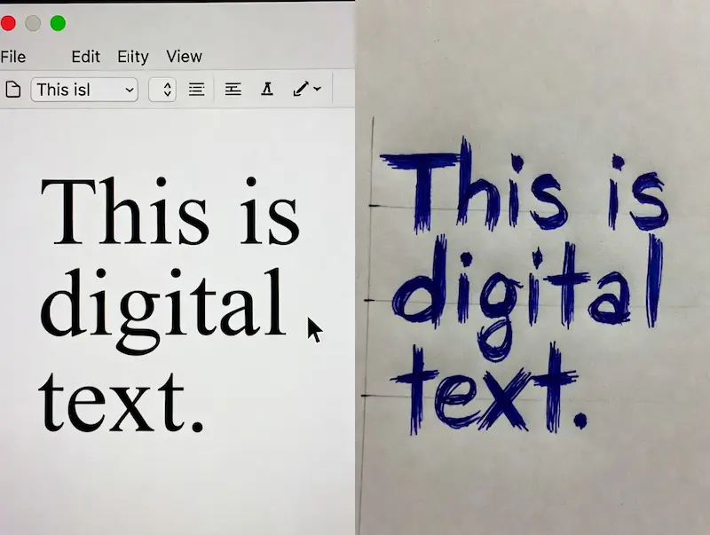

Handwriter Ultra Pro Max
Convert Digital Text to Realistic Human Handwriting. Secure & Free.
The Digital-Analog Bridge: Why Handwriter Ultra?
In an era dominated by digital screens, the personal touch of handwriting often gets lost. Handwriter Ultra Pro Max bridges this gap. It is not just a font converter; it's a sophisticated rendering engine that mimics the physics of ink on paper. Whether you are creating personalized invitation cards, nostalgic letters, or needing to submit handwritten assignments online, this tool delivers perfection without the hand cramps.

Understanding the "Humanize" Chaos Engine
Why do most online converters look fake? Because computers align text perfectly. Humans don't. Our proprietary Humanize Algorithm introduces calculated imperfections. It subtly rotates individual characters, shifts their vertical alignment, and varies the spacing between words. By adjusting the 'Chaos Level' slider, you can go from 'Neat Student' to 'Rushed Doctor' handwriting styles instantly.
The Ultimate Assignment Savior for Students
For students in Bangladesh and globally, submitting handwritten assignments in PDF format is a common requirement. Writing 50 pages by hand is exhausting. With this tool, you can type (or voice dictate) your assignment, select the 'Galada' font for Bangla or 'Homemade Apple' for English, and export a multi-page PDF that looks indistinguishable from a scanned handwritten document.
FAQ: Common Queries
- Q: Is the PDF export watermarked?
A: No. The output is 100% clean and professional, suitable for academic and professional use. - Q: Can I change the line spacing?
A: Yes. Use the 'Line Height' slider to match the ruling of the background paper perfectly. - Q: Why does the font look different on mobile?
A: We use web fonts that load on all devices. However, for the heavy rendering required for PDF generation, using a device with good RAM (like a laptop or modern phone) is recommended for speed.
Initializing secure discussion portal...